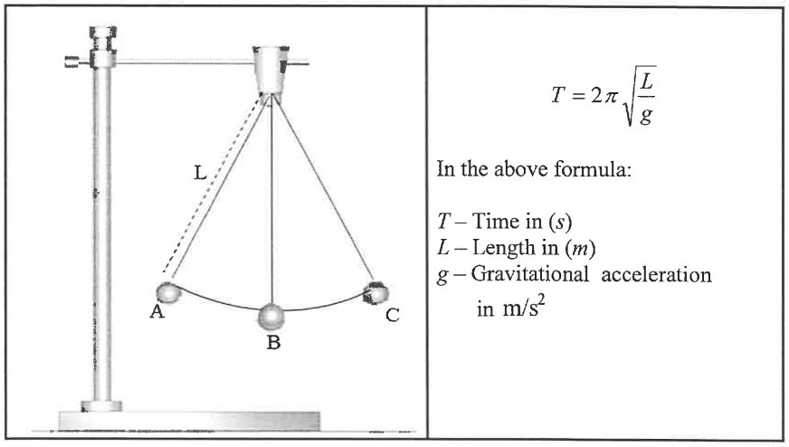

For ACT Students
The ACT is a timed exam...60 questions for $60$ minutes
This implies that you have to solve each question in one minute.
Some questions will typically take less than a minute a solve.
Some questions will typically take more than a minute to solve.
The goal is to maximize your time. You use the time saved on those questions you
solved in less than a minute, to solve the questions that will take more than a minute.
So, you should try to solve each question correctly and timely.
So, it is not just solving a question correctly, but solving it correctly on time.
Please ensure you attempt all ACT questions.
There is no negative penalty for any wrong answer.
For SAT Students
Any question labeled SAT-C is a question that allows a calculator.
Any question labeled SAT-NC is a question that does not allow a calculator.
For JAMB Students
Calculators are not allowed. So, the questions are solved in a way that does not require a calculator.
For WASSCE Students
Any question labeled WASCCE is a question for the WASCCE General Mathematics
Any question labeled WASSCE:FM is a question for the WASSCE Further Mathematics/Elective Mathematics
For GCSE and Malta Students
All work is shown to satisfy (and actually exceed) the minimum for awarding method marks.
Calculators are allowed for some questions. Calculators are not allowed for some questions.
For NSC Students For the Questions:
Any space included in a number indicates a comma used to separate digits...separating multiples of three digits
from
behind.
Any comma included in a number indicates a decimal point. For the Solutions:
Decimals are used appropriately rather than commas
Commas are used to separate digits appropriately.
Solve all questions.
Show all work.
Check all solutions to the equations as applicable.
For all problems involving Factoring, indicate the Factoring Technique(s) used.
(1.) CSEC (a) (i) Factorize completely the following quadratic expression.
$$5x^2 - 9x + 4$$
(ii) Hence, solve the following equation.
$$5x^2 - 9x + 4 = 0$$
(b) Make v the subject of the formula.
$$w = \dfrac{5 + v}{v - 3}$$
(c) The height, h, of an object is directly proportional to the square root of its perimeter,
p.
(i) Write an equation showing the relationship between h and p.
(ii) Given that h = 5.4 when p = 1.44, determine the value of h when p =
2.89.
$
(b) \\[3ex]
w = \dfrac{5 + v}{v - 3} \\[5ex]
w(v - 3) = 5 + v \\[3ex]
wv - 3w = 5 + v \\[3ex]
wv - v = 5 + 3w \\[3ex]
v(w - 1) = 5 + 3w \\[3ex]
v = \dfrac{5 + 3w}{w - 1} \\[5ex]
(c) \\[3ex]
h \propto \sqrt{p} \\[3ex]
(i) \\[3ex]
h = k\sqrt{p} ...where\;\;k\;\;is\;\;the\;\;constant\;\;of\;\;proportionality \\[3ex]
(ii) \\[3ex]
h = 5.4 \\[3ex]
p = 1.44 \\[3ex]
k = ? \\[3ex]
5.4 = k * \sqrt{1.44} \\[3ex]
5.4 = 1.2k \\[3ex]
1.2k = 5.4 \\[3ex]
k = \dfrac{5.4}{1.2} \\[5ex]
k = 4.5 \\[3ex]
For: \\[3ex]
p = 2.89 \\[3ex]
h = ? \\[3ex]
h = k\sqrt{p} \\[3ex]
h = 4.5 * \sqrt{2.89} \\[3ex]
h = 4.5 * 1.7 \\[3ex]
h = 7.65
$
(2.) NSC (2.1) Solve for x:
(2.1.1) 2x(x + 3) = 0
(2.1.2) x(x + 9) = 12 (correct to TWO decimal places)
(2.1.3) x(6 - x) ≥ 0 and then represent the solution on a number line
(2.2) Solve for x and y if: x = 1 - 2y and 3x² = 3 + x + y
(2.3) The diagram below shows a simple pendulum swinging from point A to point C.
Alongside the picture is the formula for calculating the time (T) taken for the pendulum to swing
from point A
to point C, where (L) represents the length of the string and (g) the gravitational
acceleration.

(2.3.1) Make L the subject of the formula.
(2.3.2) Hence, calculate the numerical value of L if g = 9.8 m/s² and the time taken
T = 2.74s
$
(2.1.1) \\[3ex]
2x(x + 3) = 0 \\[3ex]
2x = 0 \;\;\;OR\;\;\; x + 3 = 0 \\[3ex]
x = \dfrac{0}{2} \;\;\;OR\;\;\; x = 0 - 3 \\[5ex]
x = 0 \;\;\;OR\;\;\; x = -3 \\[3ex]
$
Check
(4.) NSC (2.1) Given the roots: $x = 5 \pm \sqrt{k - 9}$
Describe the nature of the roots if:
(2.1.1) k < 9
(2.1.2) k = 9
(2.2) Determine the value(s) of q for which the equation $-x^2 + 2qx - 4 = 0$ will have non-real
roots.
$
x = 5 \pm \sqrt{k - 9} \\[3ex]
$
(2.1.1)
When k < 9: k − 9 is a negative number
$\sqrt{k - 9}$ is the square root of a negative number, which is not a real number
Therefore $x = 5 \pm \sqrt{k - 9}$ gives two imaginary roots.
(2.1.2)
When k = 9: k − 9 = 9 − 9 = 0
$\sqrt{k - 9}$ is the square root of zero, which is zero
Therefore $x = 5 \pm \sqrt{k - 9}$ gives one repeated rational root.
$
(2.2) \\[3ex]
-x^2 + 2qx - 4 = 0 \\[3ex]
Multiply\;\;each\;\;term\;\;by\;\;-1 \\[3ex]
So,\;\;we\;\;can\;\;find\;\;the\;\;discriminant \\[3ex]
x^2 - 2qx + 4 = 0 \\[3ex]
Compare\;\;to:\;\; ax^2 + bx + c = 0 \\[3ex]
a = 1 \\[3ex]
b = -2q \\[3ex]
c = 4 \\[3ex]
Discriminant = b^2 - 4ac \\[3ex]
= (-2q)^2 - 4(1)(4) \\[3ex]
= 4q^2 - 16 \\[3ex]
= 4(q^2 - 4) \\[3ex]
$
For the equation to have non-real roots (imaginary roots), the discriminant should be negative
In other words, the discriminant should be less than zero
 As applicable, verify your answers with the
Expressions
and Equations
Calculators
As applicable, verify your answers with the
Expressions
and Equations
Calculators